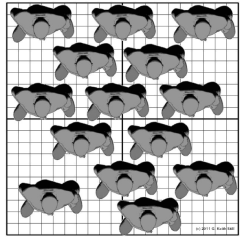

Site Introduction
An overview of the site location, boundaries, and fundamental characteristics. Establishing the foundational context for subsequent analysis.
Accessibility Analysis
Evaluating the physical and infrastructural barriers and connections that determine how easily the site can be reached by various modes of transport.
Analysis of Regional Resources and Features
Identifying and assessing natural, cultural, and built resources within the region to understand their impact on the site's potential.
Kowloon City
Kai Tak


Kowloon Walled City History

Buildings Containing POIs
Restaurant (Ground Level)
Tourist Route Map
"Little Thailand"
Kai Tak
Kowloon City
Site Analysis
A comprehensive investigation into the site's physical characteristics, environmental conditions, and micro-urban context.
Road Hierarchy
Pedestrian Hierarchy
Public Transport Network
Land Use
Public Facilities
Population
Analyzing the demographic composition, distribution, and characteristics of the local population to inform design strategies.
Population
Population by age group
Population by sex
Population by ethnicity
Domestic households by household size
Population by type of housing
Working population by employment status
Pedestrian Flow Analysis
Mapping and evaluating the volume, density, and patterns of pedestrian movement across different times and zones.
Pedestrian Flow Analysis
Number of people per square meter
1 person
2.5 person
4 person
1.5 person
3 person
4.5 person
2 person

3.5 person
5 person
Random distribution
The 3D crowd visualizer
Street Area (Kowloon Old Town): 61,619.923 square metre
Street Area (Kai Tak): 210,575.265 square metre
Crowd Flow Rate
Current State of the Site, Road, and Tunnel
A detailed examination of the tunnel's structural integrity, current capacity, and role in the existing transportation network.


Evolution of the Road — Olympic Avenue
Tracing the historical development and functional changes of Olympic Avenue, contextualizing its current state within urban growth.
2000
2009
2011
2012
2014
2016
2017
2021

2024

Now
Image source: Architectural Services Department
Construction Project: Why Build It?

Olympic Avenue was built to support the planned public housing development in Kai Tak.
Discussion: If there were no elevated structures...
SWOT
Identifying the Strengths, Weaknesses, Opportunities, and Threats inherent to the site and its surrounding context.
Aim & Vision
Establishing the overarching goals and future aspirations for the intervention, guiding all subsequent design decisions.

Option Framework
The conceptual logic and guiding principles that structure the proposed urban and architectural interventions.
Kowloon City and Kai Tak are developing in parallel, yet remain weakly connected; the existing pedestrian underpasses enable only physical passage and fail to activate public life or coordinate urban interfaces on both sides. This proposal stitches the old and new edges, shaping a legible, stay-worthy urban sequence that fosters interaction and vitality.
Concept
Create connections
Option 1
The first proposed design alternative, exploring a specific set of spatial and infrastructural interventions.
Connecting Corridors Extending from the Gaps in Tunnels and Bridges
Option2
The second proposed design alternative, offering a distinct approach to spatial organization and connectivity.
A Slow-Mobility Corridor Stitching the Old and New Districts
Option3
The third proposed design alternative, presenting a radically different configuration of the site's potential.
Heritage Memory Stitching Corridor
Framework
Refining the selected structural framework, integrating the best elements from the proposed options.
Current attractions / Walking route
Development axis
Penetration
Stitching Connections
Main Road Mode Change
Proposals for transforming primary circulation corridors through modal hierarchy adjustments and lane reconfigurations.
Before
After

Road System
A detailed plan for the vehicular and pedestrian circulation networks, emphasizing safety and efficiency.
Vehicle traffic road system
Pedestrian road system
Tourist Slow Walkway
Introduce New Modes of Transportation
Introduction of alternative mobility systems and infrastructure to diversify transportation options and reduce automobile dependency.
Shared electric scooters
Scooter Solar Charging Dock
Active Energy Generating Track
Usage scenario
Site and reference route
Plan
Master Plan

Market Plan

Sunken Plazas

Greenway Bridge & Lung Tsun Stone Bridge Heritage Park Plan

Underground Floor Plan

Render
Visualizations illustrating the final proposed atmospheric and spatial qualities of the intervened site.
Market

Greenway Bridge & Lung Tsun Stone Bridge Heritage Park

Twin Sunken Plazas

North Sunken Plaza

Greenway Bridge

SECTION
Detailed cross-sectional drawings revealing the vertical relationships, structural depths, and multi-level integration of the design.
SECTION 3-3’

Section B-B’

SECTION 4-4’